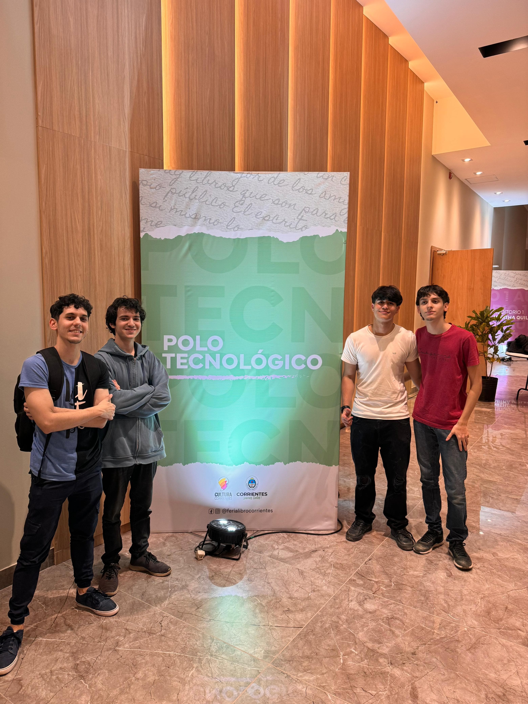

![Foto de [Tu Nombre]](Fotoyaguarete.jpg)
Educacion y Trabajo
Estudios
Educación de nivel Universitario (2023 – 2025)
Institución: Cuenca del Plata Corrientes
Tecnicatura en Programacion y Diseño de Videojuegos (Cursando actualmente)
Educación Primaria y Secundaria (2009 – 2022)
Institución: U.E.G.P. N°26 San José Obrero
Título obtenido: Bachiller en Ciencias Sociales, equivalente a Educación Secundaria.
Educación en Idiomas (2011 – 2022)
Institución: Instituto Chaqueño de Cultura Inglesa
Certificación: Título de Inglés: Nivel B1 (Sistema de Cambridge)
Experiencia laboral
Me encuentro trabajando para la Subsecretaría de Sistemas y Tecnologías de la Informacióne en Corrientes hace un año de desarrollador de videojuegos
Ademas he participado en eventos regionales de relevante importancia como la feria del Libro aqui en Corrientes
